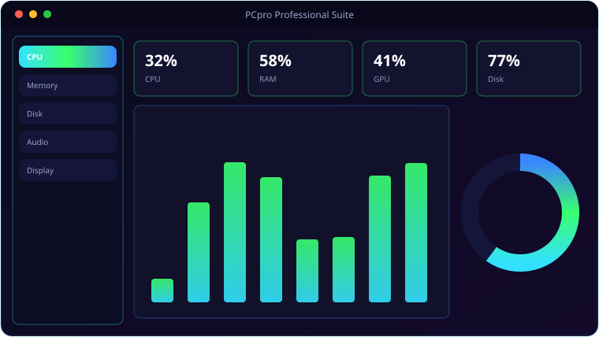

See It In Action
A look inside PCpro Professional Suite.

What It Does
Everything PCpro Professional Suite brings to the table.
📊
Live Hardware Monitoring
Real-time CPU, memory, disk, network and GPU readouts with detail cards, sampled continuously.
🔊
Audio Tab
Per-channel input/output level meters, volume and mute for default devices, plus a full device list.
🖥️
Display Tab
Per-monitor resolution, refresh, depth, DPI, orientation, adapter and EDID, with an Identify-displays button.
🧰
Ten Optimise Toolkits
A suite of maintenance and optimisation tools for cleaning up and tuning Windows.
📋
Process Manager
See and manage running processes, with BIOS and boot utilities alongside.
🔇
Crash-Safe Audio
Hard-won COM handling keeps the audio enumeration in a throwaway subprocess so the app never crashes on device queries.
Get Ready
System requirements.
💻
Minimum
- OS: Windows 10 (64-bit) or Windows 11
- CPU: Dual-core, 2.0 GHz
- Memory: 4 GB RAM
- Graphics: Any DirectX 11 / integrated GPU
- Storage: 250 MB + space for your files
- Display: 1280×768 or higher
🚀
Recommended
- OS: Windows 11 (64-bit)
- CPU: Quad-core, 3.0 GHz
- Memory: 8 GB RAM
- Graphics: Dedicated GPU (optional)
- Storage: SSD with a few GB free
- Display: 1920×1080 or higher
Under the Hood
The details.
| Monitoring | CPU · RAM · Disk · Network · GPU · Audio · Display |
| Audio | pycaw level meters, volume/mute, device list |
| Display | ctypes user32/shcore + WMI per-monitor details |
| Tools | Process manager, BIOS/boot tools, 10 optimise toolkits |
| Platform | Windows 10 / 11 (silent pythonw launcher) |
Get PCpro Professional Suite.
Live system monitoring, optimisation and maintenance — buy once, no subscription.
⬇ Download PCpro Professional SuitePCpro_Setup.exe · $9–15 one-time · no subscription · no bloat · Windows 10/11